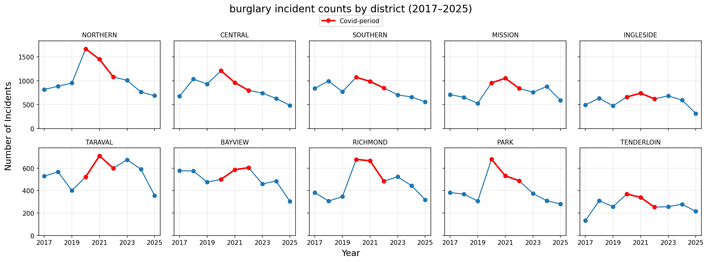
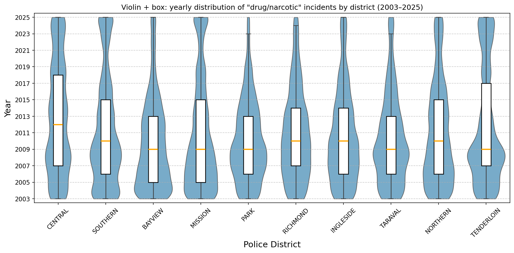
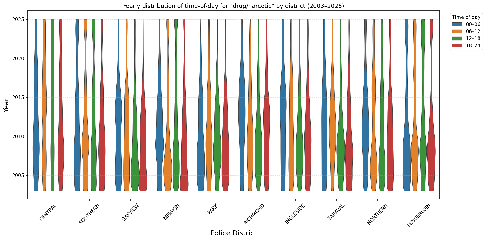

Drug / Narcotic Crime Trends
[Write a short introduction here. Keep it simple: what this project studies, what period it covers, and what readers will learn from the visualizations below.]
The long-run trajectory
[Use this section to introduce the main trend before moving into deeper patterns.]
Interpretation
[Write your explanation of the yearly trend here. This should describe the main rise-and-fall pattern, periods of change, and the core takeaway you want the reader to remember.]
- [Highlight major peaks or drops]
- [Mention stable periods]
- [End with one clear takeaway]

Variation across years
[Explain the violin / box plot here. Focus on distributional spread, outliers, and whether some years appear more volatile or more stable than others.]

Interpretation
[Describe whether incidents cluster around specific hours, whether the pattern changes from one year to another, and how concentrated or spread out activity appears.]
- [Comment on spread]
- [Comment on skew or outliers]
- [Connect the distribution back to the long-run trend]
Within-day timing patterns
[Use this section to explain spread, skew, and how consistent yearly behavior appears.]
Interpretation
[This section shifts from yearly totals to when incidents happen throughout the day.]
- [Describe dominant hours]
- [Describe visible shifts]
- [Explain why the timing pattern matters]

Interactive views
[End with interactive charts that let the reader inspect temporal and normalized structure more closely.]
Interpretation
[Use this text block between the interactive views to guide the reader. You can explain what the animation shows, what to look for over time, and how it connects to the broader story above.]
- [Explain what changes in the animation]
- [Point out what the reader should notice]
- [Connect it to the trend story]
Interpretation
[Use this middle text block for context before the normalized chart. This gives you room to explain what the quarterly view reveals that the static yearly chart does not.]
[Write a short conclusion here that ties the long-term trend, the time-of-day structure, the spread across years, the animation, and the interactive charts together.]
All styling is embedded in the <style> block, and all figures still use your existing local
file paths in the images/ folder.